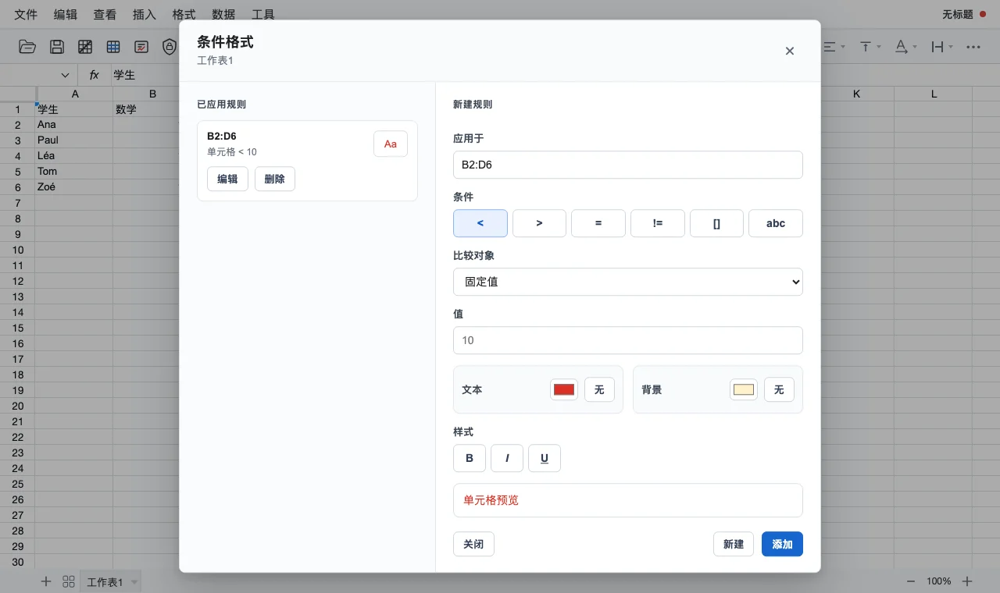

条件格式
规则改变区域中满足条件的单元格的外观，并随输入或计算的值而变化。
创建规则
- 选择区域，不含标题。
- 或 格式 › 条件格式。
- 选择条件、比较值、颜色或样式。
- 添加。

| 条件 | 单元格 |
|---|---|
< | 小于 |
> | 大于 |
= | 等于 |
!= | 不等于 |
[] | 介于两个值之间（含端点） |
abc | 包含某文本，不区分大小写 |
与什么比较
| 比较对象 | 示例 |
|---|---|
| 固定值 | 低于 10 的成绩 |
| 固定单元格 | 低于 F1 中所写界限的成绩 |
| 同一行的列 | C 列中逐行大于 B 列的值 |
外观
文本 和 背景 选择颜色，无 移除颜色；B、I、U 设为粗体、斜体、下划线。至少需要一种颜色或样式。
多条规则
左栏列出工作表的规则：编辑、删除。如果多条规则适用于同一单元格，列表中最后一条按颜色逐项优先。
在规则覆盖的区域中，直接给单元格设置的文字和填充颜色不再显示。
规则以 Excel 条件格式的形式保存在 Excel 文件中。